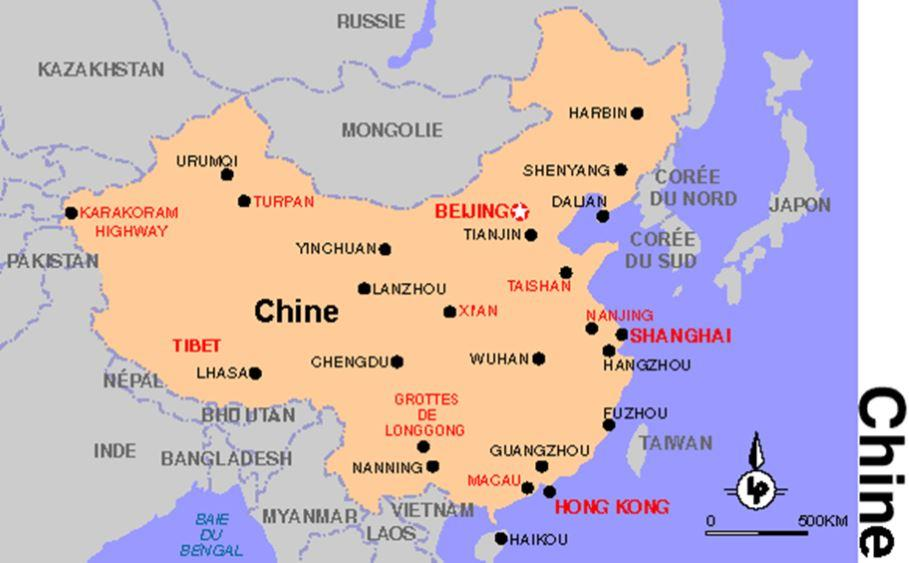

La main dans le sac ! Lorsque la presse chinoise a publié la photo de quatre dirigeants du mouvement de protestation hongkongais en compagnie du chef du département politique du consulat des Etats-Unis, on a senti comme un trou d’air dans la rhétorique anti-Pékin. Difficile, tout-à-coup, de nier l’intervention d’une puissance étrangère – à 15 000 km de ses frontières – dans une crise qui ne la concerne pas.
Tenter d’occulter ce qui saute aux yeux est toujours un exercice de haute voltige, et l’on sait la propagande occidentale coutumière de ces acrobaties ! Depuis le début des récents événements de Hong Kong au mois de juin 2019, la narration de ces événements par les officines du monde libre offre un concentré de mauvaise foi et d’inversion des signes qui passionnera certainement les politologues du futur. Multipliant les distorsions de langage, en effet, elle fait passer une affaire intérieure chinoise pour un conflit international, une décolonisation pour une colonisation et l’ingérence étrangère pour une entreprise humanitaire.
Comme celle de Taïwan – mais pour des raisons différentes -, la question de Hong Kong est le legs historique d’une époque révolue. Héritée du colonialisme bienfaiteur de sa Gracieuse Majesté, la particularité de Hong Kong lui vaut aujourd’hui un « régime d’administration spéciale » que la République populaire de Chine a bien voulu instaurer lors de la signature de l’accord sino-britannique de 1984. Quitte à enfoncer des portes ouvertes, rappelons toutefois que Hong Kong c’est la Chine, au même titre que Pékin ou Shanghaï. Car l’oubli volontaire de cette évidence est la cause de confusions en tous genres et de manipulations sans limite. La conquête coloniale du « port parfumé », au XIXème siècle, s’est déroulée en trois étapes. Les Britanniques ont annexé l’île de Hong Kong en 1842 à la suite d’une « guerre de l’opium » qui a précipité la ruine de l’empire des Qing et livré la Chine à la voracité des prédateurs coloniaux. La presqu’île de Kowloon a ensuite été arrachée en 1860 lors de l’intervention militaire franco-britannique qui a dévasté le palais d’été à Pékin. Enfin, les « nouveaux territoires » ont été cédés à Londres en 1898 pour une durée de 99 ans dans la foulée des nouvelles humiliations infligées à la Chine par les envahisseurs étrangers à l’orée du nouveau siècle.
C’est cet ensemble territorial – aujourd’hui dénommé région d’administration spéciale de Hong Kong - qui a été solennellement restitué à la République populaire de Chine en 1997 selon des modalités définies par l’accord de 1984. Bien sûr, Margaret Thatcher aurait souhaité le conserver, mais Hong Kong n’est pas l’archipel des Malouines, et la Chine n’est pas l’Argentine. Compromis entre une puissance coloniale déclinante qui déclare forfait et une grande puissance émergente qui privilégie la négociation, l’accord sino-britannique de 1984 instaure à Hong Kong un régime de semi-autonomie et prévoit l’application du principe : « un pays, deux systèmes » jusqu’en 2047. Pour Pékin, ce compromis présente un double avantage. Le premier est d’ordre politique. Adeptes du temps long, les dirigeants chinois ont opté pour une transition en douceur. La dépendance croissante du territoire à l’égard du continent favorisera son assimilation progressive, sans préjuger de son futur statut au-delà de 2047. Le second avantage est d’ordre économique. Dotée d’une rente de situation géographique, adossée à la puissance de la City, la place de Hong Kong s’est transformée en plaque tournante de la finance asiatique. En y maintenant un régime spécifique, Pékin pourra l’utiliser afin d’attirer en Chine les capitaux de la diaspora chinoise et ceux des investisseurs étrangers.
Sas d’entrée pour les flux de capitaux captés par les réformes économiques, ce minuscule territoire de 1 106 km² et 7,5 millions d’habitants continue donc à jouir depuis 1997 d’un statut particulier dont il n’existe aucun équivalent (hormis Macao) en Chine populaire. Le territoire a sa propre législation, sa propre monnaie, ses propres équipes sportives. Mêlant élection et cooptation des dirigeants, son système administratif est plus « démocratique » que celui qu’ont légué les Britanniques. Les manifestants réclament la démocratie en brandissant des drapeaux britanniques, mais les premières élections au suffrage universel ont eu lieu en 1991, c’est-à-dire après les accords de 1984, afin de conformer le système administratif aux objectifs fixés pour le transfert de souveraineté prévu en 1997. Si la crise actuelle devait dégénérer, les principaux perdants seraient donc les habitants de Hong Kong eux-mêmes. Assise sur la finance internationale, la prospérité du territoire serait vite ruinée et la place de Hong Kong détrônée par les mégapoles méridionales, Canton et Shenzen, beaucoup plus peuplées et plus puissantes que la cité portuaire.
Avec un PIB par habitant dix fois supérieur à celui de la Chine continentale, les contestataires hongkongais feraient mieux de méditer sur les conséquences d’un embrasement de leur îlot de prospérité. Au lieu de brandir des drapeaux américains et britanniques, ils devraient aussi réfléchir à ce que signifie la démocratie importée d’Occident, sans parler du destin de ceux que Washington a abandonnés du jour au lendemain après les avoir poussés à l’affrontement. Le statut particulier de Hong Kong, comme son insolente richesse, n’ont rien d’éternel. Son régime spécial est transitoire, même si l’échéance de son éventuelle disparition est lointaine (2047). Aucune règle de droit international ne contraignait la Chine à l’adopter, et elle l’a fait parce qu’elle le jugeait conforme à ses intérêts nationaux. Arraché il y a 187 ans par le colonisateur étranger, Hong Kong revenait de droit à l’État chinois. La restitution a eu lieu de façon négociée, et c’est tant mieux. Mais après cette restitution, la suite des opérations ne concerne en rien le reste du monde. C’est pourquoi la seule réponse rationnelle aux admonestations occidentales est celle qu’on peut lire dans le Quotidien du Peuple depuis le début de la crise : « Mêlez-vous de vos affaires ! ».
Mais chassez le naturel, il revient au galop ! La plupart des dirigeants occidentaux et de leurs porte-voix médiatiques – c’est plus fort qu’eux - prennent leurs désirs pour des réalités. Ils voient dans le statut particulier de Hong Kong une sorte de régime international – qui n’existe nulle part - , alors qu’il s’agit d’un aménagement interne qui relève exclusivement de la souveraineté chinoise.
Ce tour de passe-passe donne une apparence de légitimité à l’ingérence étrangère. De façon mensongère, il transforme une question intérieure en conflit international, semblant justifier auprès d’une opinion manipulée le ton péremptoire des dirigeants occidentaux. On entend alors ces derniers, dont on sait d’expérience le profond respect pour le droit international, donner des leçons à Pékin comme si Hong Kong était un territoire occupé par la Chine ! Ils reprennent même la rhétorique puérile des agitateurs hongkongais pour qui Pékin pratiquerait « l’ingérence dans les affaires intérieures du territoire » en oubliant que ce territoire fait partie de la République populaire de Chine. Heureusement pour eux, le ridicule ne tue pas. Dépassés par la Chine sur le plan économique et incapables de la vaincre militairement – pour des raisons évidentes – les Etats-Unis font feu de tout bois pour déstabiliser leur rival systémique. Le droit-de-l’hommisme à la petite semaine est la seule arme qui leur reste. Ils l’utilisent à Hong Kong comme à Caracas ou à Téhéran, et personne n’est dupe.
Un manifestant brandit un drapeau américain à Hong Kong, le 11 août 2019.
À quand, alors, une protestation chinoise sur la façon dont le gouvernement des Etats-Unis gère les crises à répétition qui sévissent sur leur territoire ou sur l’oppression séculaire subie par les Afro-Américains ?
Ceux qui dénoncent la répression insoutenable qui régnerait à Hong
Kong sont-ils les mêmes que ceux qui organisent des embargos meurtriers contre l’Iran, la Syrie, Cuba ou encore le Venezuela dont un économiste libéral, Jeffrey Sachs, a calculé que les sanctions prises contre ce pays depuis 2017 avaient provoqué la mort de 40 000 personnes dont des milliers d’enfants privés de médicaments ? Les chœurs de pleureuses parisiennes qui réclament notre solidarité avec les manifestants hongkongais soumis à une « violence inouïe » sont-ils les mêmes que ceux qui approuvèrent la délicatesse avec laquelle le gouvernement français a traité le mouvement social des Gilets Jaunes, avec ses 10 000 arrestations, 1800 condamnations et 200 blessés graves dont 25 mutilés ? Ou les mêmes, encore, que ceux qui ne trouvent rien à redire à la participation française à une guerre d’extermination au Yémen, avec ses 50 000 morts, son million de victimes du choléra et ses 8 millions de civils menacés par la famine ? Mais il est vrai que balayer devant sa porte n’est pas l’attitude la plus répandue à Washington ou à Paris. Et dans ces capitales du monde civilisé, on est toujours prompt à s’immiscer dans les affaires des autres en invoquant des principes humanitaires sur lesquels on s’assied tous les jours.
Partager cette page